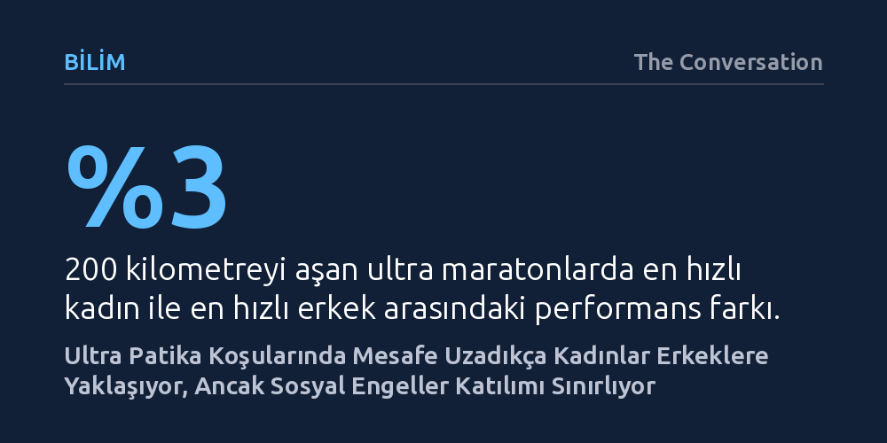

BILIM · The Conversation · 2026-10-19
Mesafe maratondan yüzlerce kilometreye çıktıkça kadınlar ile erkekler arasındaki performans farkı yüzde 19'dan yüzde 3'e kadar iniyor. Buna rağmen kadınların düşük katılımı biyolojik yetersizlikten değil, yarış öncesinde işleyen toplumsal ve ekonomik engellerden kaynaklanıyor.
Kadınların aşırı dayanıklılık yarışlarındaki zaferlerinin nadir birer biyolojik mucize değil, başlangıç çizgisine ulaşmalarını zorlaştıran toplumsal engeller aşıldığında tekrarlanan tutarlı bir örüntü olduğunu gösterir.

2026 yılının Mayıs ayında fizyoterapist Rachel Entrekin, Kuzey Amerika'nın en zorlu ultra patika yarışlarından biri olan 250 millik Cocodona parkurunu 56 saat 9 dakikada tamamladı. Neredeyse hiç uyumadan koşan Entrekin, yalnızca tüm zamanların parkur rekorunu kırmakla kalmadı; genel klasmanda en yakın erkek rakibine bir saatten fazla fark atarak yarışı birinci bitirdi. Benzer şekilde Ultra-Trail du Mont-Blanc yarışında kadınlar kategorisini 22 saatin altında tamamlayan ilk sporcu olan Blandine L’Hirondel'in ardından Entrekin ikinci sırayı aldı. Spor basını bu başarıları geleneksel bir refleksle derhal "tarihi bir an" olarak manşetlere taşıdı.
Oysa kadınların yüzlerce kilometreyi bulan yarışlardaki üstün başarıları tesadüfi zaferler veya münferit istisnalar değil. Tarihe bakıldığında 1878'de Brooklyn'de 28 gün boyunca aralıksız yürüyen Ada Anderson'dan, Western States 100 yarışını 14 kez kazanıp genel klasmanda iki kez ikinci olan Ann Trason'a; 2017'de Moab 240'ı ikinciye 10 saat fark atarak kazanan Courtney Dauwalter'dan, istasyonlarda süt sağarak Spine Race'i kazanan Jasmin Paris'e kadar uzanan kesintisiz bir geçmiş görülüyor. Medyanın her başarıyı unutup bir sonrakini yeniden ilk kez yaşanmış bir mucize gibi sunması, bu tutarlı sürekliliğin üzerini örtüyor.
Ultra patika koşuları tam da bu noktada çarpıcı bir çelişki barındırıyor: Yarış mesafesi uzadıkça başlangıç çizgisine gelen kadın sporcuların oranı belirgin şekilde azalıyor; fakat mesafe uzadıkça yarışan kadınların dereceleri erkeklerin zirve performanslarına hissedilir biçimde yaklaşıyor. Ortadaki tablo, spor dünyasının alışık olduğu bireysel rekor hikayelerinin ötesinde, hem fizyolojik hem de toplumsal boyutları olan derin bir paradoksa işaret ediyor.
Uluslararası Patika Koşusu Birliği veritabanlarına dayanan on binlerce yarışlık geniş çaplı araştırmalar, bu durumu somut verilerle ortaya koyuyor. Kısa mesafe sayılabilecek 10 kilometrelik koşularda kadınlar katılımcıların yüzde 40'ını oluştururken, en hızlı kadın koşucu en hızlı erkeğin yüzde 19 gerisinde kalıyor. Klasik maratonda bu fark yaklaşık yüzde 10 civarında seyrediyor. Ancak mesafe 100 mile çıktığında kadın katılımı yüzde 16'ya gerilerken fark yüzde 4,5'e iniyor. 200 kilometrenin üzerindeki aşırı dayanıklılık yarışlarında ise kadın koşucu oranı yüzde 10'un altına düşmesine rağmen aradaki zaman farkı yüzde 3 seviyesine kadar daralıyor.
Spor fizyolojisi araştırmaları, aşırı uçlardaki bu göreceli avantajı doğruluyor. Kadın metabolizmasının yorgunluğa karşı daha dirençli olması ve enerji depolarını aşırı efor altında daha tutumlu kullanması, yüzlerce kilometrelik etaplarda belirleyici bir avantaja dönüşüyor. Ancak bu biyolojik dayanıklılık mekanizmaları yalnızca yarış mesafesi olağanüstü uzadığında, yani kadınların başlangıç çizgisine en az çıktığı şartlarda devreye giriyor.
Öte yandan aşırı dayanıklılık, kadın sporcular için uzun süre göz ardı edilmiş ciddi bir metabolik riski de beraberinde getiriyor. Antrenman ve yarış sırasında harcanan yoğun enerji ile tüketilen kalorinin dengelenememesi, sporda göreceli enerji yetersizliği (RED-S) sendromunu tetikliyor. Bu sendrom hormon dengesini bozuyor, kemik yoğunluğunu azaltıyor, bağışıklık sistemini zayıflatıyor ve menstrüel döngüyü kesintiye uğratabiliyor. Dolayısıyla fizyolojik avantaj, sınırları zorlayan metabolik kırılganlıklarla yan yana ilerliyor.
Fizyolojik kapasite mesafeler uzadıkça kadınların lehine işliyorsa, parkurlarda neden bu kadar az kadın bulunuyor? Bu sorunun cevabı genetik kodlarda değil, toplumsal yapıda yatıyor. Coğrafi katılım haritaları bu gerçeği açıkça belgeliyor: Aynı mesafelerdeki yarışlarda bitiş çizgisine ulaşan kadınların oranı Kanada'da yüzde 34, Amerika Birleşik Devletleri'nde yüzde 31 iken, dünyanın en büyük patika pazarı sayılan Fransa'da bu oran yüzde 17'ye kadar geriliyor. Biyolojik yapı aynı olmasına rağmen katılımın ülkeden ülkeye ikiye katlanması, sorunun başlangıç çizgisine erişim koşullarında düğümlendiğini gösteriyor.
Kadın koşucularla yapılan anketler ve sosyolojik çalışmalar, sahada karşılaşılan engelleri somutlaştırıyor. Ev içi sorumlulukların ve bakım emeğinin antrenman saatlerini kısıtlaması, özel ekipman ve seyahat giderlerinin yarattığı ekonomik külfet, ilham verecek kadın figürlerin azlığı ve özellikle geceleri tek başına antrenman yaparken duyulan güvenlik endişesi katılımı frenliyor. 100 veya 250 millik bir yarışa çıkan kadınlar, parkurdan önce toplumun kurduğu çetin bir elekten geçiyor. Dolayısıyla sosyal bir filtrenin ürünü olan bu tablo, sıklıkla yanıltıcı bir biçimde biyolojik bir istisna zannediliyor.
Bu elek mekanizması prestijli organizasyonların kayıt süreçlerinde de somutlaşıyor. Örneğin UTMB'ye katılabilmek için koşucuların belirli yarışları tamamlayarak kura taşları toplaması gerekiyor; seçilen koşucuların ortalama 11 taşa sahip olması, yarıştan önce defalarca seyahat edip yarışacak zamana ve bütçeye sahip olmayı şart koşuyor. Nitekim kadınların başvuru oranı ile başlangıç çizgisine çıkanların oranının yaklaşık yüzde 17-18 bandında eşitlenmesi, asıl engelin başvuru havuzu oluşmadan önce devreye girdiğini kanıtlıyor.
Aşırı dayanıklılık sadece kas gücü veya oksijen tüketimiyle açıklanamaz. 2026 yılında yedi kadın koşucunun altı günlük bir ultra maratondaki deneyimini izleyen çalışma, spor kültürünün geleneksel varsayımlarını sarsan bir dinamik ortaya koydu. İlk günlerde ağrılarını bireysel bir zayıflık gibi görüp gizlemeye çalışan sporcular, üçüncü günden itibaren tükenişle birlikte bu maskeyi bırakarak birbirlerine destek olmaya ve istasyonlarda yardımlaşmaya başladılar. Yarış bittiğinde başarıyı kat edilen kilometrelerle değil, süreci omuz omuza tamamlamakla tanımladılar.
Spor bilimciler bu dayanıklılığı zihinsel esneklik kavramıyla açıklıyor. Rahatsızlık ve acıyla savaşmak yerine onun varlığını kabul etmek, yarış içinde tükenme noktasına gelmeden hedefleri esnetebilmek ve umutsuzluk dalgalarını kesin bir yenilgi olarak görmemek, 30 saati aşan mücadelelerde en az maksimum oksijen kapasitesi kadar kritik bir rol oynuyor. Kadın sporcuların kriz anlarında sergilediği bu uyum yeteneği, dayanıklılığın zihinsel zeminini yeniden tarif ediyor.
Bugün SheRACES ve Trail Sisters gibi organizasyonlar hamilelik erteleme hakları ve daha adil katılım kotaları için mücadele vererek kuralları dönüştürüyor. Ancak ultra patikadaki cinsiyet paradoksu, tek bir kadının gösterişli zaferiyle ya da yavaş yükselen katılım ortalamalarıyla kendiliğinden çözülmeyecek. Bunun için şeffaf ve cinsiyete göre ayrıştırılmış verilere, erişim şartlarını sorgulayan denetimlere ve kadın sporcuların hafızasını sporseverlerin zihninde canlı tutacak kurumsal bir iradeye ihtiyaç var.